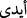

“Görmediler mi ki, biz onlar için, ellerimizin (kudretimizin) eseri olan hayvanlar
yarattık da onlar bu hayvanlara sâhip oluyorlar.” (Yâsîn 36/71) ifâdesinde el’in cemi
(__WORD__) olarak gelmiş olmasına gelince bu, padişahların âdeti üzere vârid olmuş bir
azamet ifâdesidir. Ayrıca “Çünkü kalpleriniz kaydı.” (et-Tahrîm 66/4) ifâdesinde de
görüldüğü üzere Araplar tesniyeyi çoğul yapabilmektedir. “Allah’ın eli onların
ellerinin üzerindedir.” (el-Feth 48/10) âyetinde müfred gelmiş olması ise başlangıç ve
son esas alındığı içindir. Yüce ve hükümran olan sâdece Allah’tır.
Hakkın olmadığı halde “böbürlendin mi, yoksa” üstünlük ve yüceliğe hak
kazananlardan, “yücelerden misin? dedi.”
Buradaki ‘yüceler’in, Hakk’ı müşâhedeye garkolmuş oldukları için kendilerine
Âdem’e secde etme emri verilmeyen melekler olması da muhtemeldir. Bunlar, Hicr
Suresi’nde geçtiği üzere mücerred ruhlardır.
(__WORD__), lafzındaki hemze (__WORD__) hemze-i katı’ olup aslında ( __WORD__ __WORD__ ) şeklindedir. Bu
istifham hemzesi, hemze-i vaslın başına “kınama ve beğenmeme”yi ifâde etmek için
getirilmiştir. O gelince, onunla yetinilerek hemze-i vasıl hazfedilmiş, istifham hemzesi
de fethalı olarak kalmıştır.
76. İblis: Ben ondan hayırlıyım! Beni ateşten yarattın, onu çamurdan yarattın,
dedi.
“İblis” kendisini alıkoyan mâniyi ifâde etmeğe başlayarak şöyle dedi: “Ben ondan
hayırlıyım!...” Kâşifî de der ki: İblis ikinci şıkkı tercih ederek şöyle dedi: “Ben
Âdem’den daha üstünüm.”
Mesnevî’den:
Ey mağrur ve sapkın! Canında kendini
Kâmil (olgun) sanmaktan daha beter bir hastalık olmaz,
İblis’in hastalığı “Ben Âdem’den hayırlıyım” demesiydi,
Bu hastalık her mahlûkta vardır.
Bu hastalığa mübtelâ olan, kendisini hor görse bile,
Sen onu altında pislik olan saf su bil.
İmtihan kastıyla onu bir karıştırırsan,
Hemen su bulanır, pislik rengini alır.
Sonra da niçin daha üstün olduğunu şöyle açıkladı: “Beni” letâfet ve nurâniyet olan
“ateşten yarattın,…”
İblis yapısındaki galib cüz’ü esas alarak yaratılışını ateşe nisbet ediyor. Çünkü